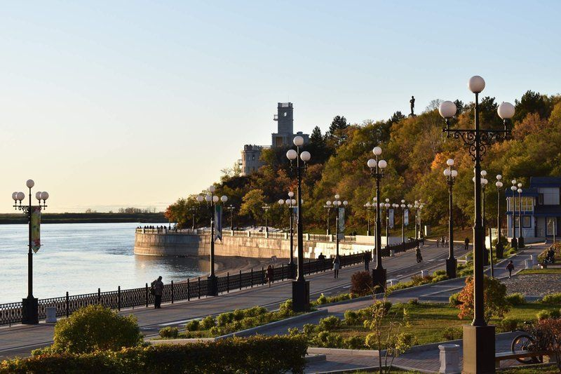

Центральная набережная Хабаровска
Набережная адмирала Невельского — улица в историческом центре Хабаровска, которая проходит от территории стадиона имени Ленина по берегу Амура и заканчивается причалом речного вокзала на Уссурийском бульваре.
Некоторые особенности набережной:
- Считается «визитной карточкой» города.
- Благоустроена как туристический маршрут и рекреационная зона.
- На набережной устроен ряд детских аттракционов, открыты кафе, обустроена площадка по воркауту, есть велодорожки и прокат.
- В центре набережной находится знаменитый Амурский утёс со смотровой площадкой, с которой открываются виды на город и Амур.
- Набережная выступает одной из границ Хабаровского краевого парка имени Н. Н. Муравьёва-Амурского.
- Названа в честь русского адмирала Геннадия Ивановича Невельского (1813–1876).
Некоторые достопримечательности набережной:
памятник Н. Н. Муравьёву-Амурскому, городской пляж и причал, откуда можно отправиться на речную прогулку.